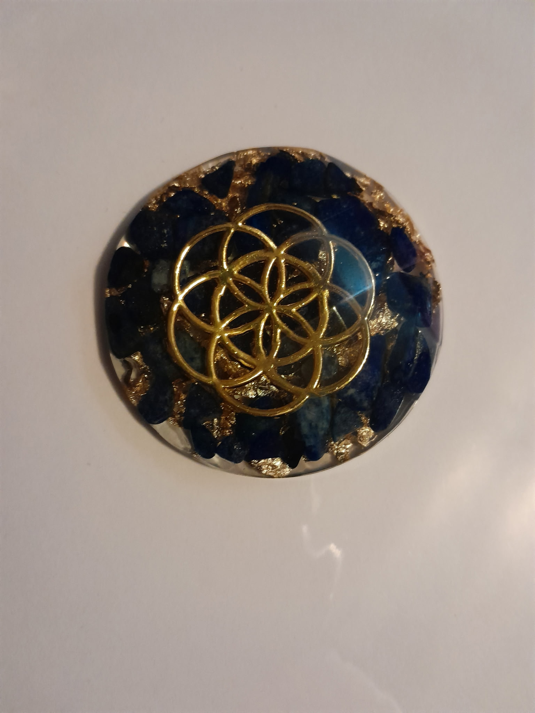
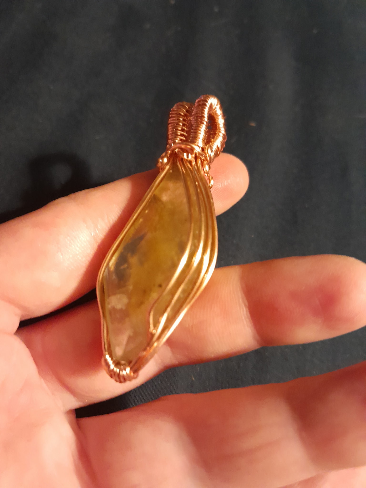
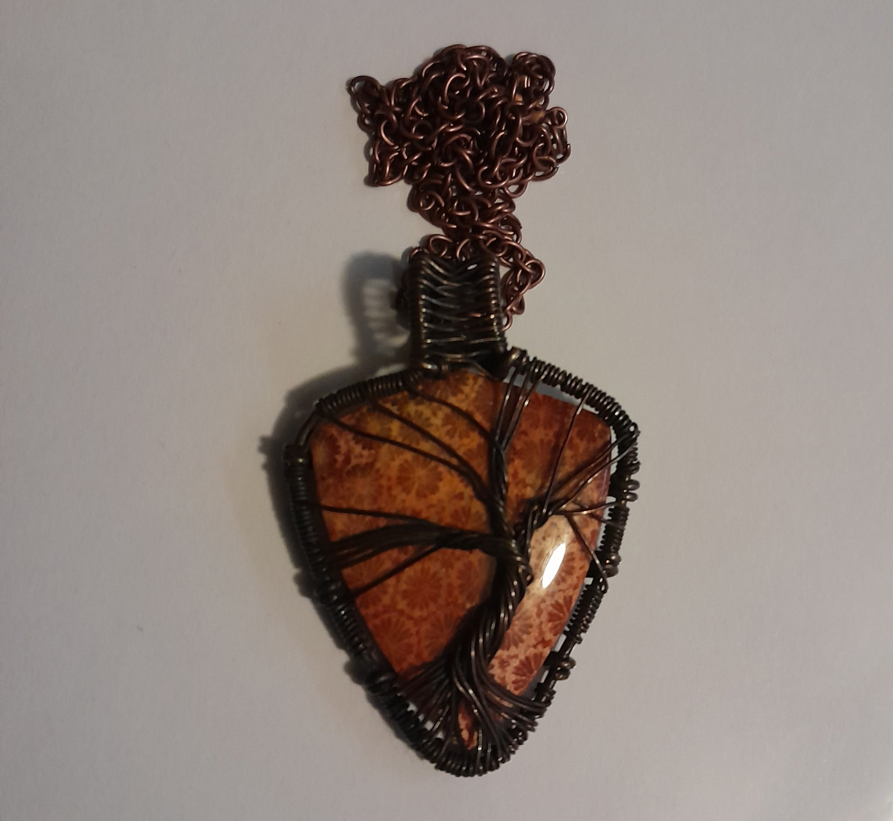
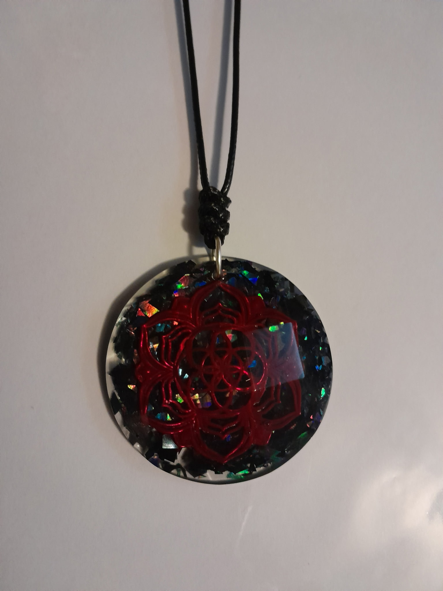

Handcrafted Wire-Wrapped Jewelry
Natural Gemstones • Artisan Craftsmanship • Southwestern Spirit
View Our WorkEvery piece is individually wire-wrapped using natural gemstones and copper wire. Inspired by the beauty of natural stone and the spirit of the Southwest.
Find us at local artisan markets, pop-up events, craft fairs, and community festivals.




We regularly attend craft fairs, artisan markets, vendor pop-ups, and community events.
Follow us online to see upcoming appearances and new creations.
Stay connected for new creations, upcoming markets, and events.